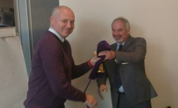
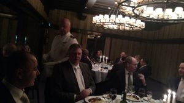

It was truly amazing to sit in the morning meeting. After spending three days focused on general discussion that at times appeared hindered by language barriers to the point of not being productive, our Chairman from NATO HQ wrapped up our “taskers” (the task items given to our working group to support NATO Command) with a level of brilliance that made me pause to appreciate.    
Turns out, we HAD covered all these topics – albeit in a roundabout manner – but still, we accomplished significant progress toward our stated goals and had much concrete information to provide up the chain of command. Awesome! Additionally, the international relations that were improved – an unmeasurable but highly important task – made the trip and cost to tax payers absolutely worth it.


One really interesting activity we did on this day was to go around the room discussing the differences and challenges to each of our defense departments (called typically by others MOD for Ministries of Defence – yes, spelled overseas with a ‘c’). Many of the military systems worldwide still use conscripts, or required military service. It’s an interesting notion that our country does not use but when young men and women are required to serve their nations, I have to imagine their understanding of the value of the service people provide is much higher, as is their patriotism.

  
 
Also, some of the nations maintain a small professional army but an enormous reserve system. Wouldn’t this be an interesting concept for our venture into cyberspace? We are really finding it a challenge to attract the top talent in cyber because it pays so much more in the industry sector – but if we maintained a network of individuals who provided only a portion of their time to defending our country – well, then maybe we would have an excellent cyber force, balance cost, AND attract some individuals who would not typically be interested in the strict military rank structure. Something to consider….
  Now the ball Р<cough> I mean dinner – it was, simply put, FANTASTIC! All the men looked dapper and the women looked marvelous. For a girl from Oviedo, Florida who never though she’d go to a ball….well, the world has smiled on me and I feel so blessed.
 Now the ball Р<cough> I mean dinner – it was, simply put, FANTASTIC! All the men looked dapper and the women looked marvelous. For a girl from Oviedo, Florida who never though she’d go to a ball….well, the world has smiled on me and I feel so blessed.

USA and Switzerland

ME and Netherlands

     
       
  

We watched a mens military choir ‚Äì moved me to tears. Beautiful. We at the most exquisite beef and wine. So much lovely food. And I got the opportunity to thoroughly embarrass myself by trying to speak French with the two gentlemen next to me. But we vowed to learn more before the next meeting!! And sooooooo‚Ķ‚ĶI now begin a new adventure and life learning task ‚Äì HOW DO I LEARN FRENCH IN SIX MONTHS?!! üòÄ

ME and Poland

Talking with Germany
